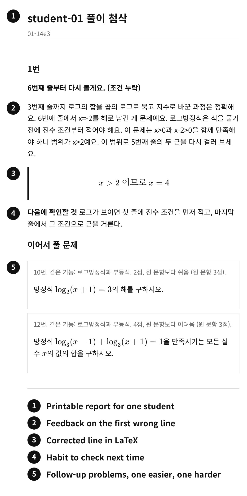
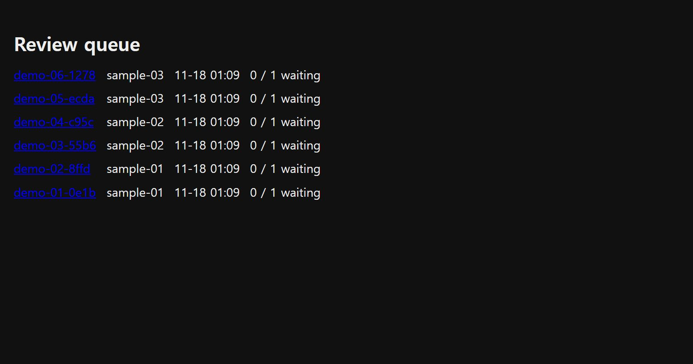
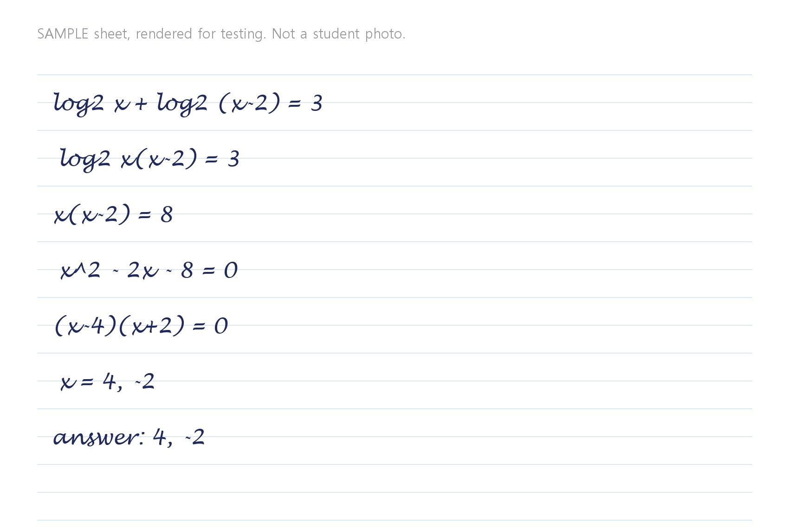

Overview
A tutor photographs a student's handwritten solutions. Out come the first wrong line of each problem, CSAT-level feedback on it, and past-exam follow-ups on the same skill, with unsure cases held for the teacher.
- Method
- few-shot learning from worked examples and the teacher's own corrections, no fine-tuning
- Checks
- SymPy line checker and the official answer key, outside the model
- Built by
- a tutor in the top 0.01% on 김과외 (author's statement, screenshot to be added)
- Coverage
- 5 subjects, 15 units, 64 skill tags, 8 error types
Problem define
Photo solvers read the problem and solve it themselves, so they grade the answer, not the student's lines. A tutor still has to find by hand where each student went wrong.
Solution
A command line tool, a local teacher review page and a printable student report with follow-up problems chosen one easier, one equal, one harder. Every teacher edit is kept and fed back as a few-shot example.
| Value with unit | What it measures (10 words or fewer) |
|---|---|
| 5 of 5 | wrong answers flagged by the answer key, 6 sample sheets |
| 1 of 5 | planted mistakes located by the line checker alone |
| 15 tests | checker, few-shot loop, routing, recommendation, end-to-end pass |


Process
- Transcribe. Claude copies each written line into LaTeX with the mistakes kept and marks unclear handwriting.
- Check. SymPy re-checks arithmetic, identities and solution sets line by line; the answer key decides the final answer.
- Few-shot. Three worked examples plus the teacher's past corrections on the same skill go into every diagnosis.
- Route. A problem goes out alone only if handwriting, bank match, checker and model agree; the rest waits for a teacher.

Lesson
The line checker finds arithmetic slips; condition and concept slips need the model.
On the six sample sheets it located one of five planted mistakes. The rest depends on the model and its few-shot examples, whose accuracy has not been measured on real student pages yet. The sample sheets are rendered, not photographed, so messy handwriting is untested.